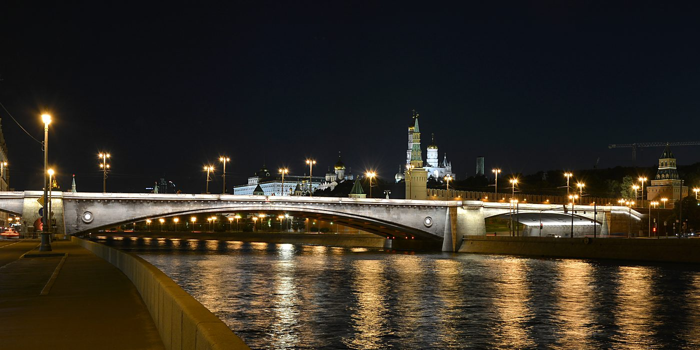

Наконец-то
День, который я жду с начала осени. И он начинается в Жуковском, в 10:40.

Фото: Andrey Korzun, CC BY-SA 4.0
- Когда
- рейс SZ337, прилёт 10:40 (Жуковский)
- Гостиница
- Сафмар Аврора Люкс
- Встречаю в Жуковском: рейс SZ337 из Душанбе, прилёт по московскому времени
- Едем в отель: 47 км, в пятницу закладываю полтора часа. Приедем раньше 14:00 — оставим вещи и перекусим
- Заселение в Сафмар Аврора Люкс, Петровка, 11
- Аутлет на Орджоникидзе — тёплые кроссовки и всё, что попадётся; перекус по пути, без спешки
Вечер
Про этот день
- Жуковский — не Шереметьево: до центра почти пятьдесят километров. Ты прилетаешь в 10:40, пока ножками дойдешь, багаж получишь — я буду с переминаться с ноги на ногу в ожидании. Потом такси и дорога, заезд в отеле с 14:00 — успеваем доехать без гонки, оставить вещи и пообедать где-нибудь рядом с Петровкой.
- Кроссовки — первое дело, а не последнее: в ноябре Москва не прощает лёгкую обувь. Аутлет работает с 10:00 до 22:00, так что вечер он не поджимает: выбираем не спеша, по ходу перекусываем.
Прогулка, которая выглядит случайной
- Дальше — моя любимая часть дня. Выходим из аутлета и идём «куда глаза глядят», а глядят они в сторону Парк Горького: три километра, сорок минут — или десять минут на машине, если с покупками тяжело.
- По парку — к воде и дальше по набережной: Крымский мост, Софийская набережная, огни на той стороне. Речных трамвайчиков в ноябре уже нет, но река в темноте хороша и без них.
- Потом Большой Москворецкий мост, Китай-город, Лубянка — и не спеша до Петровки. За вечер наберётся километров семь, но это тот случай, когда ноги не считаешь.
- Замёрзнем или устанем — половину проедем, маршрут от этого не рассыплется. Спонтанность в том и состоит, что можно свернуть в любой переулок.
В номере
- Ужин сегодня не в ресторане: по дороге берём что-нибудь с собой, роллы вполне подойдут. Можно забежать сюда — Има
- Есть в номере после длинного дня — отдельное удовольствие.
- Пену, соль и что-нибудь пахнущее закажу заранее, чтобы всё уже было готово. После самолёта это лучше любого плана.
- Если после ванны захочется спать — значит, день удался.
ℹ️ Про рейс
SZ337, Душанбе — Жуковский, прилёт в 10:40 по московскому. В Душанбе время на два часа впереди Москвы, вылет в 08:00 по билету — это 06:00 по Москве. Почти 6 часов лета (считая сдвиг по времени), это утомительно.ℹ️ Про воду в этот вечер
Проверил расписания: речные трамвайчики заканчивают сезон в конце октября, так что 6 ноября их уже нет. Городские электросуда ходят круглый год, но к Парку Горького не подходят — их маршруты западнее и южнее: «Киевский — Парк Фили», «ЗИЛ — Печатники», «Новоспасский — ЗИЛ». Вода у нас будет 9-го, на яхте.Если всё-таки захочется воды именно в пятницу — от причала «Киевский» (три километра по набережной от парка) электросудно идёт до Парка Фили, платить можно «Тройкой». Есть прикольный трамвайчик по имени "Филька".